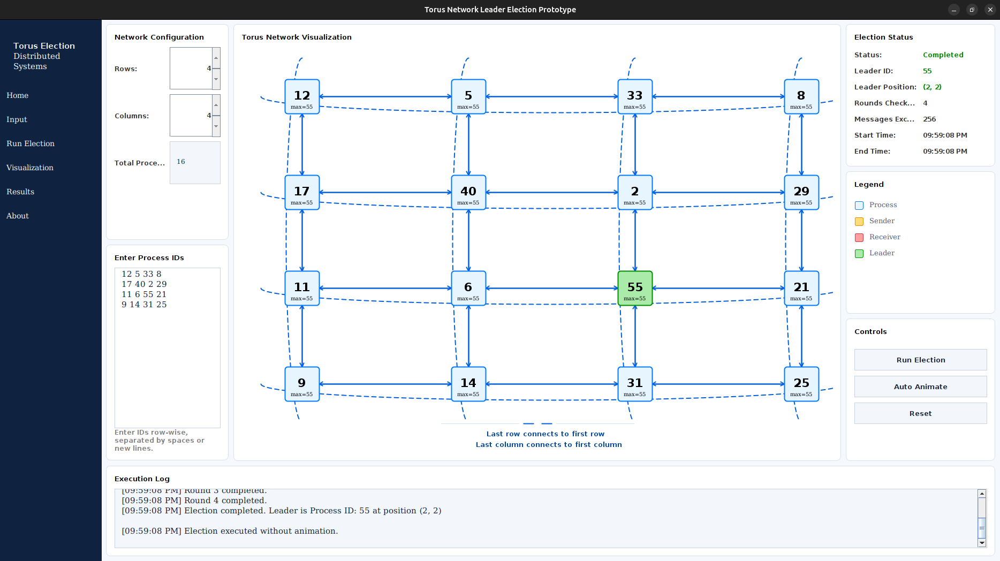
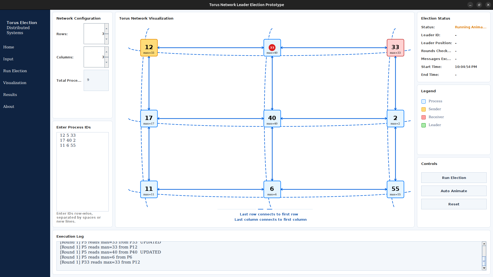
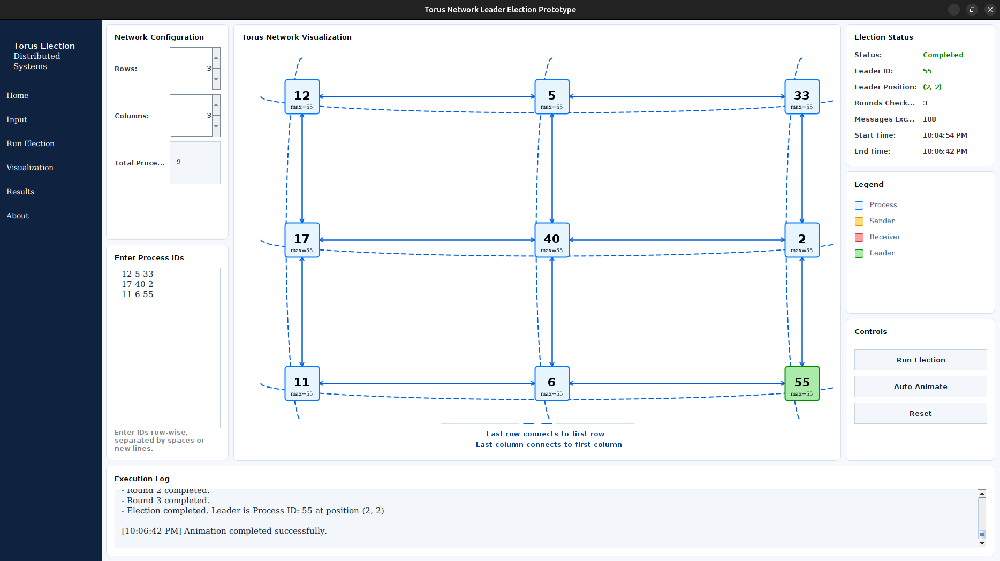

Configurable Torus
Choose rows and columns, then enter unique process IDs for each grid cell.
 Torus Election GUI
Torus Election GUI
A Java Swing desktop application for visualizing leader election in a two-dimensional torus network with immediate execution, animated message propagation, packaged installers, and persistent logs.

Choose rows and columns, then enter unique process IDs for each grid cell.
Each process propagates its maximum known ID until the global leader is found.
Replay message exchanges step by step and keep persistent per-user log files.


mvn compilemvn compile
java -cp target/classes Mainmvn package
java -jar target/torus-election-gui-1.0.3.jarmvn clean package -Plinux-installer
sudo apt install ./target/installer/torus-election-gui_1.0.3-1_amd64.debmvn clean package -Pwindows-installersudo snap install snapcraft --classic
snapcraft~/.local/share/torus-election-gui/logs/torus-election-gui.log
%LOCALAPPDATA%\torus-election-gui\logs\torus-election-gui.log
~/snap/torus-election-gui/current/.local/share/torus-election-gui/logs/torus-election-gui.log